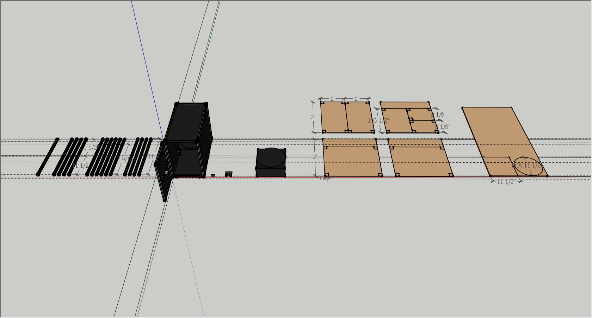
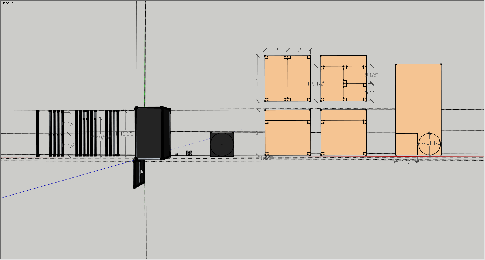
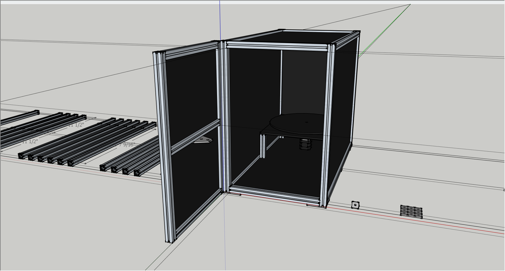
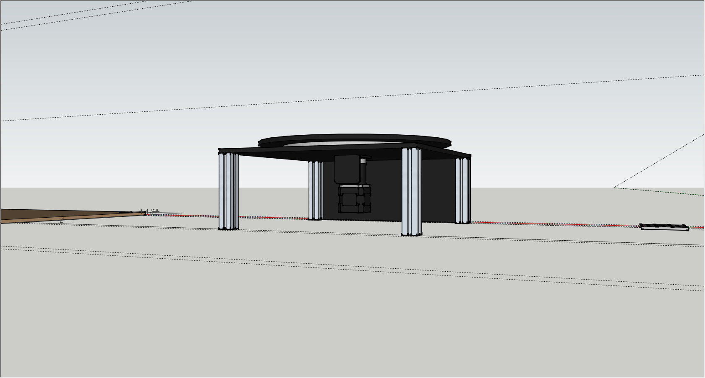
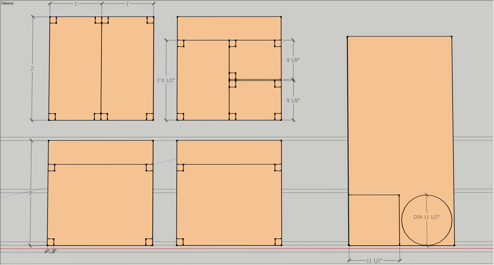
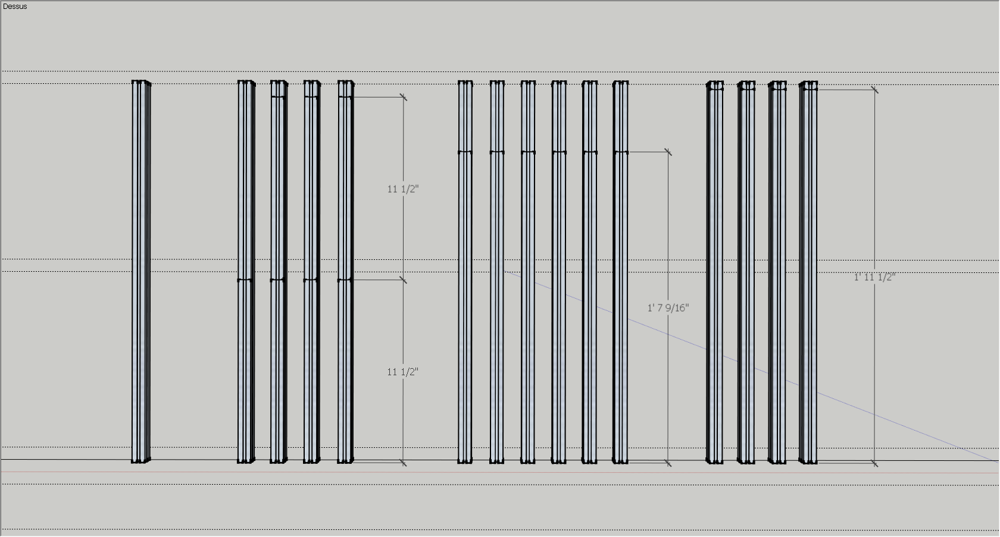
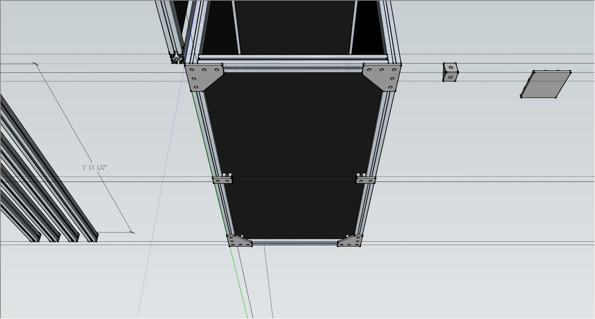
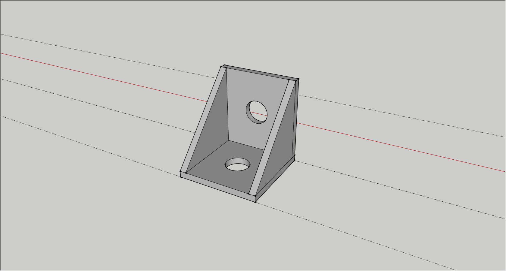

Accueil
Dans un contexte de jeux vidéo, il existe une panoplie d’objets ou « assets » qui sont utilisés dans l’environnement. Ces objets, qui sont en fait une simulation virtuelle de leur réplique réelle, sont modélisés et construits de toute pièce au moyen d’outils permettant l’animation, le rendu ainsi que la modélisation tridimensionnelle. Ainsi, ce processus requiert généralement beaucoup de temps, et c’est pourquoi un système tel que celui de Virtual Matter a été pensé. En effet, en implantant un tel système dans un contexte de jeux vidéo (par exemple), il est maintenant possible d’importer des objets de la vie réelle directement dans le monde virtuelle de manière dynamique (scanner 3D), sans avoir à les modéliser manuellement.
Média
       Support
Contact
Auteur du projet
Jérémi Panneton
jeremi.panneton@outlook.com
Superviseur

Joan-Sébastien Morales